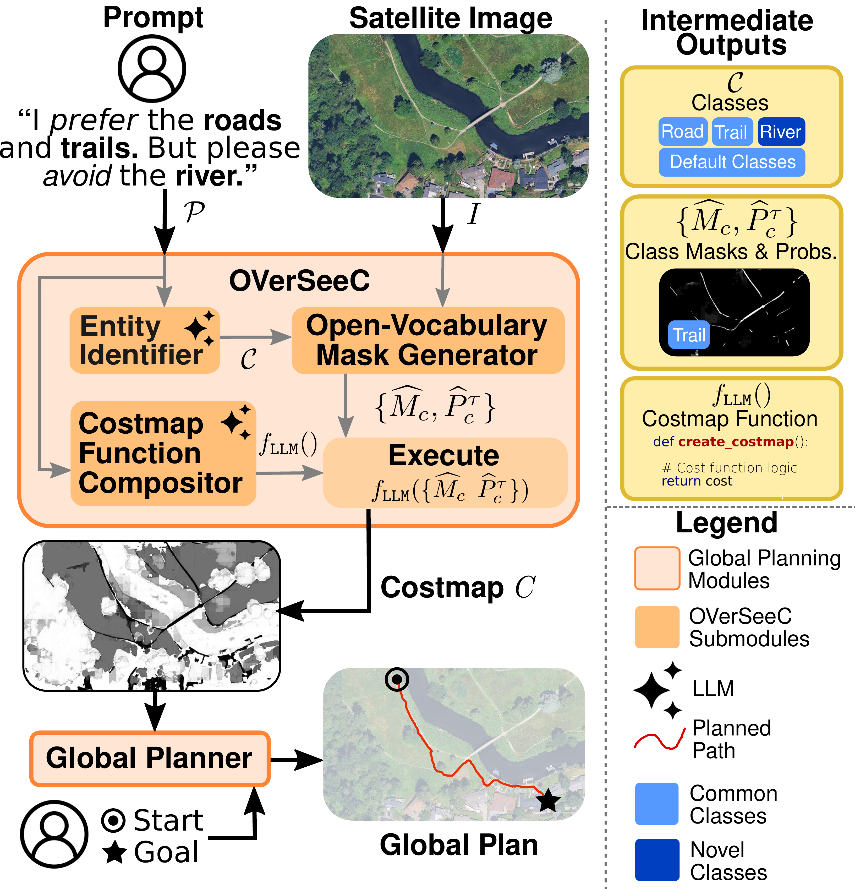

Aerial imagery provides essential global context for autonomous navigation, enabling route planning at scales inaccessible to onboard sensing. We address the problem of generating global costmaps for long-range planning directly from satellite imagery when entities and mission-specific traversal rules are expressed in natural language at test time. This setting is challenging since mission requirements vary, terrain entities may be unknown at deployment, and user prompts often encode compositional traversal logic. Existing approaches relying on fixed ontologies and static cost mappings cannot accommodate such flexibility. While foundation models excel at language interpretation and open-vocabulary perception, no single model can simultaneously parse nuanced mission directives, locate arbitrary entities in large-scale imagery, and synthesize them into an executable cost function for planners. We therefore propose OVerSeeC, a zero-shot modular framework that decomposes the problem into Interpret–Locate–Synthesize: (i) an LLM extracts entities and ranked preferences, (ii) an open-vocabulary segmentation pipeline identifies these entities from high-resolution imagery, and (iii) the LLM uses the user’s natural language preferences and masks to synthesize executable costmap code. Empirically, OVerSeeC handles novel entities, respects ranked and compositional preferences, and produces routes consistent with human-drawn trajectories across diverse regions, demonstrating robustness to distribution shifts. This shows that modular composition of foundation models enables open-vocabulary, preference-aligned costmap generation for scalable, mission-adaptive global planning.